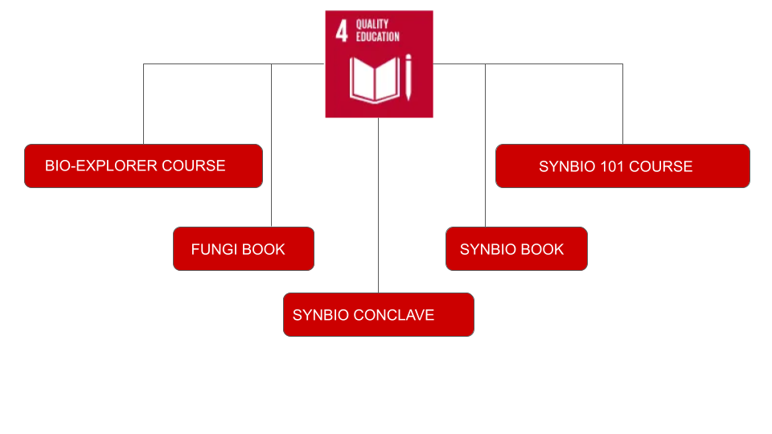

SUSTAINIBILITY
“It is not enough to learn about the natural world, the point is to defend and preserve it.”
~ Edward Abbey
As responsible citizens, it is necessary for us to preserve the natural environment for future generations. The Sustainable Development Goals or Global Goals are a collection of 17 interlinked global goals designed to be a "blueprint to achieve a better and more sustainable future for all". Throughout the course of our project, we targeted to fulfill the following Sustainable Development Goals.
Goal 3: Good Health and Well-being
“Ensure healthy lives and promote well-being for all at all ages.”
Our recombinant enzyme aims to reduce fungal infestations, mainly in immunocompromised patients. Since fungal infestations belong to non-communicable diseases, we aim to attain 3.4. By 2030, reduce by one-third premature mortality from non-communicable diseases through prevention and treatment and promote mental health and well-being.
By developing our chitinase drug from natural sources, we are trying to replace harmful chemical fungicides currently available in the market. This helps in reducing the deaths and illnesses from hazardous chemical pollution.
Goal 4: Quality Education
“Ensure inclusive and equitable quality education and promote lifelong learning opportunities for all.”

Irrespective of the gender of the audience, we aimed to propagate ideas of synthetic and basic biology among students of varying age groups. We created booklets on synthetic biology concepts and basic details on fungi with attractive cartoons to educate primary school children. We conducted public discussions, symposia, and presentations on our project ideas and synthetic biology, irrespective of age and gender.
Goal 5: Gender Equality
“Achieve gender equality and empower all women and girls.”
As part of After iGEM, our team member Ms. Shrutika Sansaria has been a part of the Data Team of the Women in STEM (WISTEM) initiative to gather data to identify potential challenges women face in the synthetic biology industry at different levels of career development. They performed a social media mini-campaign to obtain the first look into gender diversity in synthetic biology and biotechnology entrepreneurship. It helps to ensure equal engagement and opportunities for women in the field of synthetic biology.
Goal 12: Responsible Consumption and Production
“Ensure sustainable consumption and production patterns.”
Our project aimed to reduce the consumption of harmful chemical fungicides, their improper disposal to the environment damaging the quality of water, air, and soil. We are accomplishing this goal by synthesizing a chitinase-based drug that is completely derived from natural sources. This also depicts the sustainable use of natural resources to reduce chemical dependency and related adverse effects on the environment.
Goal 14: Life Below Water
“Conserve and sustainably use the oceans, seas and marine resources for sustainable development.”
The drainage of chemical fungicides to marine water bodies could be decreased by the introduction of eco-friendly and naturally derived fungicides like chitinase protein which is the basic idea of our project.
SUSTAINABLE LAB PRACTICES
We made fifteen sustainable lab practices in detail and pasted these in different laboratories in our institution and the lab space where we are working.
- Cover chemical beakers when not in use. EH&S recommends that lab users cover any beakers that are not currently in use and, by law, all hazardous chemical waste containers must be sealed except when actively adding chemicals. In a high airflow environment like a laboratory, volatile chemicals will off-gas very quickly, wasting your chemical and causing pollution. Fume hood exhaust is not filtered, but rather exhausted at a high velocity in order to dilute any pollutants sufficiently that they do not pose acute environmental hazards. So even if it is in a fume hood, please cover the beaker.
- Post a freezer map and inventory on the door of the freezer to keep samples organized and minimize the amount of time needed to find a sample: Minimizing the amount of time the freezer door is open reduces temperature fluctuations within the unit, saves time, and saves energy. Plan ahead to make sure you know everything you need and where it is located before you open the freezer door. To keep the freezer efficient check the rubber seals are working and defrost regularly.
- Try to use reusable materials (like glass pipettes instead of plastic pipettes) whenever possible.
- Replace hazardous chemicals such as ethidium bromide with an equivalent but non-mutagenic product such as SYBR Safe.(if it's available)
- Order from sustainable suppliers: If you are serious about making an impact, you can take the time to research companies that are actively going green and you can choose to order from sustainable suppliers that are also committed to reducing their own carbon footprint.
- Altering equipment settings: If your PCR machine needs to run overnight, try altering the settings so it holds at 10oC rather than 4oC.
- Power down computers at night: If computers are not actively in use (i.e. collecting data), then powering these down overnight can really help. Make it a habit and encourage your colleagues to do the same.
- Reuse boxes and tip boxes.
- To reduce the overall consumption of plastic, we should aim to use autoclavable glassware instead where possible. Planning experiments with consumable wastage in mind are also useful, taking time to consider if you could multiplex or miniaturise without affecting your outcomes.
- Always turn off taps properly.
- Keep your water bath covered at all times to help maintain the desired temperature with less energy and requiring less frequent water changes.
- We can also reduce our environmental impact on water by always disposing of chemicals appropriately and never flushing them down the drain, which risks contaminating drinking water.
- Biological Safety and Laminar Flow Cabinets: Ensure cabinets are turned off when not in use. Ensure UV lights are not left on for extended periods after use.
- EDUCATE YOUR PEERS:
a. Place “It’s OK To Switch Me Off” stickers on equipment that doesn’t need to stay on 24/7 to help remind lab mates to switch off equipment. These stickers include a space to indicate how long it takes for a particular piece of equipment to start up again, as well as a space for the Lab Manager to sign off in approval.
b. Put up signs near the door that encourages the last person leaving the lab each day to do the following :
i.Turn off the lights & any computers or other electronic equipment.
ii.Shut the windows & close any blinds.
iii.Close fume hood sashes. The sash should be kept as low as possible during operation and only raised to the highest level during setup of the experiment. In general, the sash should be shut.
- Energy Efficient Oven Practices:
a.Ovens and other heating equipment can often be turned off during unoccupied hours.
b.Evaluate the amount of time it takes for the oven to get up to temperature and place a “Turn me off sticker” with this information on the unit, so that users are informed about how long it will take to reach temperature and can plan accordingly.
c.Evaluate whether your usage of the equipment requires continuous heat, or if the heat can be reduced or turned off when the contents are not needed.
d.Try to minimize the number of times the oven door is opened, and the length of time it is opened for.
We also pasted stickers mentioning some of these practices so that the users can easily follow them when they are using that instrument or space even though they haven’t gone through all these points.